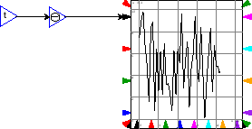
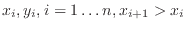

Next: copy Up: Operations Previous: differentiate
0.1 0.3 0.5 0.7 0.9 1
If the input is less than the minimum key value (0.1 here), then the operation outputs the corresponding value (0.3). Similarly if the input is greater than the maximum (0.9), the corresponding value (1) is output. If it lies in between two keys (eg 0.2), the the output is linearly interpolated (0.4).
Alternatively, the data block can be initialised by a random number generator, which is a way of introducing random numbers into the simulation. The parameters, the minimum and maximum values of the function's domain, and the number of random samples over that domain, are all required.
 |
 |
More formally, a data block is an empirical function, based on a table
of pairs of values (
) read in from
a file. The function's output is linearly interpolated from the data,
ie: